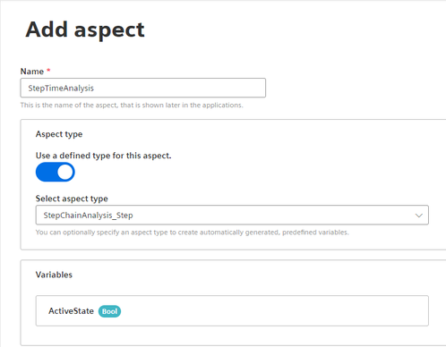
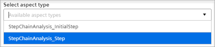

Aspekttypen für die Schrittzeitanalyse (PI) erstellen
Wenn Sie in der App Performance Insight die Schrittzeitanalyse verwenden möchten, dann benötigen Sie dazu Aspekte mit vordefinierten Aspekttypen und mit fest zugeordneten Variablen.
Vorgehensweise
Um einen Aspekttyp zu erstellen, gehen Sie folgendermaßen vor:
- Klicken Sie auf das entsprechende Asset.
- Klicken Sie in der Detailansicht auf das Register "Aspekte".
- Klicken Sie auf "Aspekt hinzufügen".
- Das Dialogfenster wird angezeigt:
 - Geben Sie einen Namen ein.
- Aktivieren Sie die Option "Use a defined type for this aspect".
- Wählen Sie einen der beiden vordefinierten Aspekttypen aus:

{kind=link}
{kind=link}
Ergebnis
Ein Aspekt mit dem Aspekttyp "StepChainAnalysis_InitialStep" enthält zwei vordefinierte Variablen:
{kind=link}
Ein Aspekt mit dem Aspekttyp "StepChainAnalysis_Step" enthält eine vordefinierte Variable:
{kind=link}
Produkterstellung in Performance Insight
Bei Verwendung des Aspekttyps "StepChainAnalysis_InitialStep" wird im automatisierten Dashboard der Schrittzeitanalyse in Performance Insight ein Produkt angelegt. Der Produktname wird über die Variable "Product" übermittelt und kann in der App mithilfe des Anzeigenamens noch deutlicher spezifiziert werden.